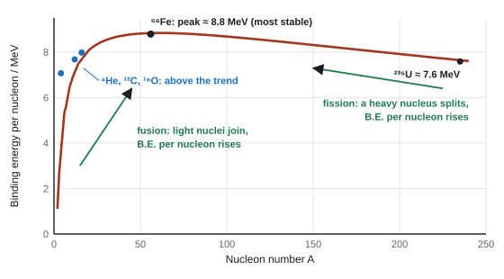
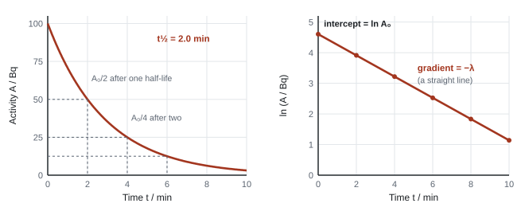

Nuclear Decay
The nucleus holds enormous amounts of energy, and this page is about how it gets out. You will see why a nucleus weighs less than the parts it is made from, why both splitting heavy nuclei and joining light ones release energy, what alpha, beta and gamma radiation are, and why a lump of radioactive material decays in such a predictable way when each nucleus inside it behaves completely at random.
Spec133Binding energy and mass deficit
Understand nuclear binding energy, and use ΔE = c²Δm to calculate mass deficits and the energy released in nuclear processes.
Mass deficit
- A nucleus has less mass than the protons and neutrons (nucleons) that make it, measured separately. The difference is the mass deficit (mass defect) Δm:
Mass deficit
- Z = proton number; A = nucleon number; mp, mn = proton and neutron masses.
Binding energy
- The binding energy of a nucleus is the energy needed to separate it completely into its individual nucleons. Equivalently, it is the energy released when the nucleus forms from separate nucleons.
- Mass and energy are equivalent (Einstein):
Mass–energy equivalence
- ΔE = energy (J); c = 3.00 × 10⁸ m s⁻¹; Δm = mass (kg).
- Binding energy is not energy stored inside the nucleus. A nucleus with a large binding energy is more tightly bound: you'd have to put more energy in to pull it apart.
- Binding energy per nucleon = total binding energy ÷ A. The higher it is, the more stable the nucleus (spec point 135).
Energy released in a decay or reaction
- In any spontaneous decay, fission or fusion, the products have less total mass than the starting particles. The missing mass appears as energy (mostly KE of the products, plus gamma photons):
Energy released in a decay or reaction
The calculation chain (each step is a mark)
- Find Δm in u (total mass before − total mass after; or nucleons − nucleus).
- Convert to kg: × 1.66 × 10⁻²⁷ kg u⁻¹.
- ΔE = c²Δm in J.
- Convert to MeV: ÷ 1.60 × 10⁻¹³ J MeV⁻¹ (or to eV: ÷ 1.60 × 10⁻¹⁹).
- For binding energy per nucleon, divide by A.
Keep at least 5–6 significant figures in the masses until after the subtraction: the difference is tiny.
Binding energy per nucleon of iron-56
Fe-56 has 26 protons and 30 neutrons. Mass of the nucleus = 55.92067 u; mp = 1.00728 u; mn = 1.00867 u.
Δm = 26 × 1.00728 + 30 × 1.00867 − 55.92067 = 26.18928 + 30.26010 − 55.92067 = 0.52871 u
Δm = 0.52871 × 1.66 × 10⁻²⁷ = 8.777 × 10⁻²⁸ kg
ΔE = c²Δm = (3.00 × 10⁸)² × 8.777 × 10⁻²⁸ = 7.90 × 10⁻¹¹ J
In MeV: 7.90 × 10⁻¹¹ / 1.60 × 10⁻¹³ = 494 MeV
Per nucleon: 494/56 = 8.8 MeV
Energy released in alpha decay
²²⁶Ra → ²²²Rn + ⁴He. Atomic masses: Ra-226 = 226.025410 u, Rn-222 = 222.017578 u, He-4 = 4.002603 u.
Δm = 226.025410 − (222.017578 + 4.002603) = 0.005229 u
= 0.005229 × 1.66 × 10⁻²⁷ = 8.680 × 10⁻³⁰ kg
ΔE = (3.00 × 10⁸)² × 8.680 × 10⁻³⁰ = 7.81 × 10⁻¹³ J = 4.88 MeV
Atomic masses work here because the electrons balance on both sides (88 = 86 + 2).
A helium-4 nucleus has a mass of 4.00151 u. Calculate (a) its mass deficit in kg, (b) its binding energy in MeV, and (c) its binding energy per nucleon. (proton mass = 1.00728 u, neutron mass = 1.00867 u)
Show solution
Total mass of 2 protons and 2 neutrons:
\[ 2(1.00728) + 2(1.00867) = 4.03190\ \text{u} \](a) \(\Delta m = 4.03190 - 4.00151 = 0.03039\ \text{u} = 0.03039 \times 1.66 \times 10^{-27} = 5.04 \times 10^{-29}\ \text{kg}\)
(b) \(\Delta E = c^2\Delta m = (3.00 \times 10^{8})^2 \times 5.045 \times 10^{-29} = 4.54 \times 10^{-12}\ \text{J}\)
\[ \frac{4.54 \times 10^{-12}}{1.60 \times 10^{-13}} = 28.4\ \text{MeV} \](c) There are 4 nucleons, so the binding energy per nucleon is \(28.4 / 4 = 7.1\ \text{MeV}\).
Write down the mass difference in u before converting. Examiners give the subtraction its own mark, and "a bald answer scores zero": you need at least two of the steps written (WPH15 Oct 2021). Don't round in the middle: rounding Δm early turned 7.88 MeV into 7.85 MeV and lost the mark (WPH15 Jan 2026).
- "Use of ΔE = c²Δm", "conversion of u to kg" (× 1.66 × 10⁻²⁷), "conversion of J to MeV".
- "Do not accept use of 1.67 × 10⁻²⁷" for u (WPH15 Jan 2026); use the booklet value 1.66 × 10⁻²⁷ kg.
- Binding energy per nucleon: give at least 2 s.f., worked from the masses given in the question without early rounding; an answer that drifts from the data value loses the final mark (WPH15 Oct 2025).
- Binding energy: "energy needed to separate a nucleus into its (individual) nucleons".
Often asked as: energy released in an alpha or beta decay from atomic masses; binding energy (per nucleon) from nucleon masses; mass converted to energy per second in the Sun; MCQ on what binding energy means.
Applying E = mc² to the whole mass of a nucleus instead of the mass difference. Subtracting in the wrong order, or leaving out one of the three masses. Multiplying nuclide masses by the number of nucleons. Forgetting the 10⁻²⁷. Using the proton mass instead of u to convert. Dividing when you should multiply (J → MeV is ÷ 1.60 × 10⁻¹³). Forgetting to divide by A for "per nucleon". Giving a decay energy when the binding energy of a nucleus was asked for.
Examined in past papers even though the spec doesn't list it.
- Beta decay with atomic masses: in β⁻ decay the daughter atom has one more electron than the parent's nucleus needs, so atomic masses already include the emitted electron's mass. Check what the question gives: one paper subtracted the electron mass (0.00055 u) explicitly (WPH15 Jan 2021).
- Masses in unfamiliar units such as GeV/c²: multiply by 10⁹ × 1.60 × 10⁻¹⁹ to get J directly (WPH15 Jun 2021).
- The energy released is shared between the products by momentum conservation (see 139).
Spec134The atomic mass unit
Express small masses in atomic mass units (u) and convert between u and kg.
Definition and conversions
- The atomic mass unit u is one twelfth of the mass of a carbon-12 atom. It is roughly the mass of one nucleon.
The atomic mass unit
- The mass of a nucleus in u is close to (slightly less than) its nucleon number A. So a quick estimate of the mass of one nucleus is A × 1.66 × 10⁻²⁷ kg.
- Energy equivalent of 1 u: E = c²Δm = (3.00 × 10⁸)² × 1.66 × 10⁻²⁷ = 1.494 × 10⁻¹⁰ J = 934 MeV with booklet values (the precise value is 931.5 MeV). You may use "1 u ≈ 934 MeV" as a shortcut if you show where it comes from.
- 1 eV = 1.60 × 10⁻¹⁹ J; 1 MeV = 1.60 × 10⁻¹³ J.
Mass of nuclei from a count
A sample contains 3.0 × 10²¹ uranium-238 nuclei. Find the mass of uranium.
Mass of one nucleus ≈ 238 × 1.66 × 10⁻²⁷ = 3.95 × 10⁻²⁵ kg
Total = 3.0 × 10²¹ × 3.95 × 10⁻²⁵ = 1.2 × 10⁻³ kg (1.2 g)
- "× 1.66 × 10⁻²⁷ kg u⁻¹" is the conversion mark in every decay-energy question.
- "Mass of one nucleus = A × u" for an approximate mass; "use of 1 u = 934 MeV (ecf)" accepted (WPH15 Jan 2022).
Often asked as: the conversion step inside 133; mass of a sample from the number of nuclei (often from N = A/λ in 142).
Using 1.67 × 10⁻²⁷ kg (the proton mass) instead of 1.66 × 10⁻²⁷ kg. Using A × mp as the mass of a nucleus.
Spec135Fission, fusion and the binding energy per nucleon curve
Explain nuclear fission and fusion using the graph of binding energy per nucleon against nucleon number.
The curve

- Iron-56 (and its neighbours) has the highest binding energy per nucleon: it is the most stable nucleus.
- Any change that moves nuclei up the curve (towards iron) releases energy, because the products are more tightly bound and so have less total mass.
Fusion
- Fusion: two light nuclei join to make a heavier nucleus. For light nuclei (left of the peak) the binding energy per nucleon increases, so energy is released.
- The curve is steepest here, so fusion releases more energy per kilogram of fuel than fission.
Fission
- Fission: a heavy nucleus (e.g. U-235, after absorbing a slow neutron) splits into two medium-sized nuclei plus 2 or 3 neutrons. For nuclei right of the peak, the products have a higher binding energy per nucleon, so energy is released.
- The released neutrons can cause further fissions: a chain reaction.
- Fission of a nucleus lighter than iron (e.g. He-4) would absorb energy, because the products would have a lower binding energy per nucleon.
Energy released from graph readings
Energy released from the curve
with total binding energy = A × (binding energy per nucleon) for each nucleus.
Energy from fusion and fission using the curve
Fusion ²H + ³H → ⁴He + n. Binding energies per nucleon: ²H 1.11 MeV, ³H 2.83 MeV, ⁴He 7.07 MeV (a lone neutron has none).
Reactants: 2 × 1.11 + 3 × 2.83 = 10.71 MeV
Products: 4 × 7.07 = 28.28 MeV
Released = 28.28 − 10.71 = 17.6 MeV
Fission ²³⁵U + n → ¹⁴¹Ba + ⁹²Kr + 3n. Readings: U-235 7.6 MeV, Ba-141 8.3 MeV, Kr-92 8.5 MeV.
Released = (141 × 8.3 + 92 × 8.5) − 235 × 7.6 = 1952 − 1786 = about 170 MeV
Per nucleon of fuel: fusion 17.6/5 ≈ 3.5 MeV; fission 170/236 ≈ 0.7 MeV. Fusion gives more energy per kilogram.
In a nuclear reactor, uranium-235 absorbs a neutron and splits: \({}^{235}_{92}\text{U} + {}^{1}_{0}\text{n} \rightarrow {}^{141}_{56}\text{Ba} + {}^{92}_{36}\text{Kr} + 3\,{}^{1}_{0}\text{n}\). The binding energies per nucleon are U-235: 7.59 MeV, Ba-141: 8.33 MeV, Kr-92: 8.51 MeV. (a) Calculate the energy released in one fission. (b) Estimate the energy released if 1.0 kg of uranium-235 undergoes fission.
Show solution
(a) Free neutrons have no binding energy, so only the nuclei count.
\[ \text{before: } 235 \times 7.59 = 1784\ \text{MeV} \] \[ \text{after: } 141 \times 8.33 + 92 \times 8.51 = 1174.5 + 782.9 = 1957\ \text{MeV} \] \[ \text{energy released} = 1957 - 1784 = 174\ \text{MeV} = 174 \times 1.60 \times 10^{-13} = 2.78 \times 10^{-11}\ \text{J} \](More energy, bringing the total to about 200 MeV, is released later as the neutron-rich fission products decay.)
(b) Mass of one U-235 nucleus \(\approx 235 \times 1.66 \times 10^{-27} = 3.90 \times 10^{-25}\ \text{kg}\), so 1.0 kg contains
\[ N = \frac{1.0}{3.90 \times 10^{-25}} = 2.56 \times 10^{24}\ \text{nuclei} \] \[ E = 2.56 \times 10^{24} \times 2.78 \times 10^{-11} = 7.1 \times 10^{13}\ \text{J} \]Burning 1 kg of coal releases about \(3 \times 10^{7}\ \text{J}\), so this is over two million times more.
To sketch the curve for marks: start near the origin and rise steeply, peak at Fe-56 (label it, about 8–9 MeV), then fall slowly. Label the y-axis "binding energy per nucleon / MeV". Read a total binding energy from the graph as A × (the y-value at that A): the superscript in the symbol is the A you need.
- Fission: "a large nucleus splits (into two (smaller) nuclei and neutrons)"; "binding energy (per nucleon) increases so energy is released", or "decrease in (total) mass so energy is released" (WPH15 Jan 2024).
- Fusion: "light nuclei combine"; "binding energy per nucleon increases".
- Graph sketch: "steeply rising curve near to origin; slowly decreasing curve after peak; iron-56 marked at peak" (WPH15 Jun 2021).
- Fe-56 has the greatest binding energy per nucleon, not the greatest total binding energy (WPH15 Jan 2023).
Often asked as: define fission; sketch the curve and mark Fe-56; balance a fission equation; explain how fission or fusion releases energy; energy released from graph readings; compare Fe and U binding energies.
"Binding energy decreases in fission, so energy is released" is wrong: it increases. Using the word "fission" without saying what happens. Confusing total and per-nucleon binding energy. Only counting one fission product's binding energy.
Examined in past papers even though the spec doesn't list it.
- Balancing a fission equation including the neutrons: ²³⁶U → ⁹³Sr + ¹⁴¹Xe + 2n (WPH15 Jun 2021).
- A trap: fission of He-4 would decrease binding energy per nucleon, so it would not release energy (WPH15 Oct 2025).
- Estimating U-235's binding energy per nucleon from the graph by proportion (about 7.4–7.6 MeV) (WPH15 Oct 2025).
Spec136Conditions for nuclear fusion
Understand why fusion needs very high temperatures and very high densities to start and to keep going.
Why it is hard
- Nuclei are positively charged, so they repel each other electrostatically. The repulsion grows as they get closer.
- The strong nuclear force that can bind them together only acts over a very short range (about 10⁻¹⁵ m, the size of a nucleus).
- To fuse, two nuclei must get close enough for the strong force to act. They must approach with a very large kinetic energy to overcome the repulsion.
The two conditions
- Very high temperature (about 10⁷ K in the Sun's core; around 10⁸ K in Earth reactors): mean KE ∝ T, so the nuclei move fast enough to overcome the electrostatic repulsion. At these temperatures matter is a plasma: electrons are stripped from the nuclei.
- Very high density (a large number of nuclei per unit volume): collisions happen often enough to keep the fusion rate high, so enough energy is released to maintain the high temperature and sustain fusion.
Where these happen
- In a star, gravity squeezes the core to a huge density, and the gravitational collapse raises the temperature.
- On Earth, the plasma must be confined by strong magnetic fields: it can't touch a solid wall, which would cool it and stop fusion (and would be damaged). Keeping the plasma hot, dense and confined for long enough is why fusion power is so difficult.
- In the Sun, hydrogen fuses to helium (net: 4 protons → 1 helium-4 nucleus + 2 positrons + 2 neutrinos + energy).
The Sun's mass loss
The Sun's luminosity is 3.85 × 10²⁶ W. How much mass does it convert to energy each second?
Δm/Δt = L/c² = 3.85 × 10²⁶ / (3.00 × 10⁸)² = 4.3 × 10⁹ kg s⁻¹
Estimate the temperature needed for two deuterium nuclei to get within 3.0 fm of each other, assuming the energy available in a collision is about \(\tfrac{3}{2}kT\).
Show solution
The energy needed is the electrostatic potential energy at 3.0 fm (each deuterium nucleus has charge \(+e\)):
\[ E_\text{p} = \frac{8.99 \times 10^{9} \times (1.60 \times 10^{-19})^2}{3.0 \times 10^{-15}} = 7.67 \times 10^{-14}\ \text{J} \]Set \(\tfrac{3}{2}kT = E_\text{p}\):
\[ T = \frac{2E_\text{p}}{3k} = \frac{2 \times 7.67 \times 10^{-14}}{3 \times 1.38 \times 10^{-23}} = 3.7 \times 10^{9}\ \text{K} \]This is only an estimate, but it shows that temperatures of billions of kelvin are needed if every collision has just the average energy.
The indicative content is the same in every paper (WPH15 Oct 2021, Jan 2024, Oct 2024, Jan 2026, Jun 2026):
- (very) high temperature;
- so the nuclei/protons have enough kinetic energy ("kinetic energy, not just energy");
- to overcome the electrostatic repulsion between the positively charged nuclei;
- so the nuclei get close enough to fuse (within range of the strong force);
- (very) high density;
- so there is a high collision rate, to sustain fusion / maintain the temperature.
"Not 'particles', not 'molecules', not 'atoms'": say nuclei or protons. Accept "collide more often"; reject "number of collisions" (WPH15 Jun 2026).
Often asked as: a 4-mark short answer or a 6-mark linkage question on fusion in a star's core or a reactor; why Earth fusion needs magnetic confinement; mass lost per second by the Sun.
Writing "particles" or "atoms" instead of nuclei. Saying high density means "more collisions" without "per second" (rate). Answering about the balance of forces inside a star (that's a different question). Saying "energy" when the mark needs "kinetic energy".
Examined in past papers even though the spec doesn't list it.
- Plasma containment on Earth with strong magnetic fields (WPH15 Oct 2020).
- Mass converted per second from L/c², and the fraction of the Sun's mass used up over a time (WPH15 Oct 2020, Jun 2024).
Spec137Background radiation
Know that background radiation is always present and correct measured count rates for it.
Sources
- Natural: radon gas seeping from rocks and soil (the largest share in many places; an alpha emitter, hazardous when breathed in); rocks and buildings (granite); cosmic rays from space; food and drink (potassium-40, carbon-14), so our own bodies.
- Artificial: medical X-rays and tracers (the biggest artificial share); fallout from past weapons tests and accidents; nuclear industry (very small).
- It varies with location (rock type, altitude).
Correcting for it
- With no source present, measure the count over a long time (several minutes) and work out the background count rate.
- Subtract it from every reading taken with the source:
Background correction
- Do the subtraction before any further processing (logs, ratios, half-lives).
- A decay curve that levels off above zero, or a count that never falls below a steady value, is showing the background.
- Radioactive counts fluctuate randomly, so longer counting times give more reliable averages.
Corrected count rate
Background: 270 counts in 10 minutes. With the source: 1950 counts in 5 minutes. Find the corrected count rate.
Background rate = 270/10 = 27 counts per minute
Measured rate = 1950/5 = 390 counts per minute
Corrected = 390 − 27 = 363 counts per minute
With no source present, a GM tube records 186 counts in 10 minutes. A source is then placed in front of it and the tube records 1240 counts in 2 minutes. Calculate the corrected count rate in counts per second.
Show solution
Background count rate \(= 186 / 600\ \text{s} = 0.31\ \text{s}^{-1}\).
Measured count rate \(= 1240 / 120\ \text{s} = 10.33\ \text{s}^{-1}\).
Corrected count rate \(= 10.33 - 0.31 = 10.0\ \text{s}^{-1}\).
- "Measure the count (rate) with no source present (over a long time)"; "subtract (the background count rate) from each reading".
- Without the correction "the count rate is overestimated" / "background count introduces a systematic error". Just saying "it gives a more accurate value" scored nothing (WPH15 Jun 2024).
Often asked as: MCQs on how background affects a measurement (WPH15 Jun 2021, Jan 2026); deduce whether an activity has fallen to background level; describe how to find the background and why it causes a systematic error.
Subtracting the background from the initial activity in a calculation where the question's numbers are already corrected. Muddling initial and final activities when finding the time to fall to background.
Spec138Alpha, beta and gamma radiation
Relate the nature of alpha, beta and gamma radiation to their ionising ability, penetration and range in different materials.
Properties
| Alpha (α) | Beta-minus (β⁻) | Gamma (γ) | |
|---|---|---|---|
| Nature | helium nucleus: 2 protons + 2 neutrons | fast electron from the nucleus | high-energy electromagnetic wave (photon) |
| Charge | +2e | −e | 0 |
| Mass | about 4 u | about 1/1840 u | 0 |
| Ionising ability | strong | moderate | weak |
| Range in air | a few cm | tens of cm to about 1 m | very long (intensity falls with distance) |
| Stopped by | a sheet of paper, or skin | a few mm of aluminium | reduced (never fully stopped) by several cm of lead or metres of concrete |
| Deflection in fields | small (heavy), towards the negative plate | large (light), opposite way to α | not deflected |
(β⁺ is a positron, charge +e; its properties are otherwise like β⁻, but it annihilates with an electron almost at once.)
Ionising ability links to range
- Ionisation: the radiation knocks electrons out of atoms it passes, losing some energy each time.
- Alpha is massive and doubly charged, so it interacts strongly and ionises densely. It loses its energy fast, so it has a short range: the more strongly ionising, the shorter the range.
- Gamma is uncharged and interacts rarely, so it ionises weakly and penetrates far. Its intensity falls exponentially with absorber thickness (spec point 140), so there is no definite range.
Safety
- Outside the body, alpha is the least dangerous (skin stops it). Inside the body (inhaled or swallowed) it is the most dangerous, because all its ionisation is done in a small volume of living tissue.
- Handle sources with tongs (distance), for as short a time as possible ("the ionising effect is cumulative"), with shielding; store in lead-lined boxes.
- Cloud chamber: "the thickness of the track is related to the ionising ability: alpha is strongly ionising and beta only moderately ionising (so alpha tracks are thick, beta tracks thin)"; "the shape of the track is related to the mass: alpha particles are massive (so straight tracks) and beta are not (so twisted tracks)" (WPH15 Jun 2023).
- Alpha: "can only travel a few cm in air", "only a danger if taken into the body" (WPH15 Jun 2026).
- Safety: "use tongs", "minimise time of exposure as the ionising effect is cumulative" (WPH15 Oct 2020).
Often asked as: comment on each radiation in turn in a given context; cloud-chamber tracks; safety with a source; shielding thickness from a graph; tracer choice.
GCSE-style lists of materials (lead, concrete) that ignore the context in the question. Not commenting on each radiation separately. Confusing "ionisation energy" with ionising ability. Linking a twisting track to speed rather than to the particle's small mass. Giving beta a charge of +1e: β⁻ is −e (only the positron, β⁺, is +e).
Examined in past papers even though the spec doesn't list it.
- PET scans: a β⁺ tracer emits positrons that annihilate with electrons, producing two gamma photons that pass out of the body to the detectors. The tracer's half-life must be long enough to do the scan but short enough to limit the dose (WPH15 Oct 2022).
- An alpha particle ionising air excites molecules, which emit UV photons as they de-excite; the weakly ionising UV travels much further, so it can be detected at a safe distance (WPH15 Jun 2021).
- The fraction of beta absorbed rises with paper thickness: quote the relationship, not vague "absorbs more" (WPH15 Jan 2025).
Spec139Nuclear equations
Write and interpret nuclear equations for decays and reactions, given the particle symbols.
Rules
- Write each nucleus as AZX (A = nucleon number on top, Z = proton number below).
- Nucleon number (top) is conserved and charge/proton number (bottom) is conserved: the totals are the same on both sides.
The particle symbols
| Particle | Symbol | Top (A) | Bottom (Z) |
|---|---|---|---|
| alpha | 42α or 42He | 4 | 2 |
| beta-minus (electron) | 0−1β or 0−1e | 0 | −1 |
| beta-plus (positron) | 0+1β or 0+1e | 0 | +1 |
| neutron | 10n | 1 | 0 |
| proton | 11p | 1 | 1 |
| gamma | 00γ | 0 | 0 |
| electron antineutrino / neutrino | ν̄e / νe | 0 | 0 |
The decays
- Alpha: A falls by 4, Z falls by 2.
22688Ra → 22286Rn + 42α - Beta-minus: a neutron becomes a proton (n → p + e⁻ + ν̄e). A unchanged, Z rises by 1. An antineutrino is emitted too.
9038Sr → 9039Y + 0−1β + ν̄e - Beta-plus: a proton becomes a neutron (p → n + e⁺ + νe). A unchanged, Z falls by 1. A neutrino is emitted.
189F → 188O + 0+1β + νe - Gamma: the nucleus drops from an excited state to a lower energy state. A and Z don't change. It often follows alpha or beta decay.
- Fission and fusion obey the same rules: 23592U + 10n → 14156Ba + 9236Kr + 310n (top: 236 = 141 + 92 + 3; bottom: 92 = 56 + 36).
How the energy is shared
- Alpha decay (two products): momentum is conserved, so the alpha and the daughter nucleus move off with equal and opposite momentum. Since Ek = p²/2m, the much lighter alpha gets almost all the KE, and every alpha from that decay has the same energy.
- Beta decay (three products: daughter, electron, antineutrino): the energy can be shared in many ways, so beta particles have a continuous range of energies up to a maximum. This was the evidence for the neutrino.
KE of the alpha particle
In the Ra-226 decay 4.88 MeV is released. The alpha (4 u) and radon (222 u) share it. Find the alpha's KE.
Equal momentum p, and Ek = p²/2m, so Ek ∝ 1/m.
Eα = 4.88 × 222/(222 + 4) = 4.79 MeV (the radon gets only 0.09 MeV)
Uranium-238 (\(Z = 92\)) decays by emitting an alpha particle, and the product then emits two beta-minus particles. (a) Identify the final nucleus. (b) Uranium-238 eventually becomes stable lead-206 (\(Z = 82\)). How many alpha and beta-minus decays happen along the way?
Show solution
(a) Alpha: \(A = 238 - 4 = 234\), \(Z = 92 - 2 = 90\) (thorium-234). Each beta-minus adds 1 to \(Z\): \(90 \rightarrow 91 \rightarrow 92\). The final nucleus is \({}^{234}_{\ 92}\text{U}\), a different isotope of uranium.
(b) Only alpha decay changes \(A\), by 4 each time: \(238 - 206 = 32\), so there are \(32/4 = 8\) alpha decays. Those would reduce \(Z\) by 16, from 92 to 76. To end at 82, \(Z\) must rise by 6, so there are 6 beta-minus decays.
- Top line (nucleon numbers) and bottom line (proton numbers) are separate marks.
- Beta-minus: electron as 0−1e "plus an antineutrino"; the daughter has Z + 1.
- Range of beta energies: "momentum/KE is shared between three particles"; "the energy split between the beta particle and the (anti)neutrino is random" (WPH15 Jan 2021).
- Alpha: "momentum is conserved, so the velocity of the heavy nucleus is much less, so its KE is much smaller than that of the alpha" (WPH15 Oct 2021).
Often asked as: complete a β⁻ equation with the antineutrino (Sr-90, tritium, K-40); balance alpha, fission or fusion equations; why beta energies vary; why the recoiling nucleus gets almost no KE.
Writing the beta particle as A = −1, Z = 0 (upside down). Subtracting 1 from Z in β⁻ decay, or combining −1 and 38 to give 37 for Y-90 (it's 39). Forgetting the antineutrino. Leaving out the neutrons in a fission equation.
Spec140Core practical 15: absorption of gamma radiation by lead
Investigate how the count rate of gamma radiation depends on the thickness of lead absorber.
The relationship
- Gamma intensity (and corrected count rate R) falls exponentially with absorber thickness x:
Absorption of gamma radiation
- R₀ = corrected count rate with no absorber; μ = attenuation (absorption) coefficient (unit: cm⁻¹ or m⁻¹, the inverse of x's unit).
- Take natural logs to get a straight line:
Straight-line form
- Plot ln R (y) against x: gradient = −μ, y-intercept = ln R₀.
- Half-value thickness (thickness that halves the count rate): x½ = ln 2/μ.
Core practical 15: method
- With no source nearby, record the background count over at least 5 minutes; find the background count rate.
- Clamp the gamma source and the Geiger–Müller tube a fixed distance apart (e.g. 10 cm). Record the count over a fixed time (e.g. 1 minute) with no lead.
- Measure each lead sheet's thickness with a micrometer (or vernier calipers) at several points and average.
- Put lead sheets between source and tube, building up the thickness. For each thickness take three 1-minute counts and average.
- Subtract the background from every count rate, then plot ln(corrected count rate) against thickness.
Variables: independent = lead thickness; dependent = count rate; control = source–detector distance, same source and detector, counting time, position (same background).
Safety: lift the source with long tongs, point it away from people, keep it at arm's length and return it to its lead-lined box straight away; minimise time near it; wash hands after handling lead.
Improvements: count for longer to reduce the effect of random fluctuations; keep the distance fixed with a clamp and ruler.
Attenuation coefficient and half-value thickness
Corrected count rates (counts per minute): x = 0 cm, 480; 0.5 cm, 374; 1.0 cm, 291; 1.5 cm, 227; 2.0 cm, 177; 2.5 cm, 138.
ln R: 6.17, 5.92, 5.67, 5.42, 5.17, 4.92 (a straight line, so the decay is exponential).
Gradient (large triangle, ends of the line) = (4.92 − 6.17)/(2.5 − 0) = −0.50 cm⁻¹, so μ = 0.50 cm⁻¹
x½ = ln 2/μ = 0.693/0.50 = 1.4 cm
Check: R at 1.4 cm ≈ 480 × e−0.70 ≈ 240, half of 480.
- "Log expansion of R = R₀e−μx", "μ identified as (−) gradient", "gradient calculated", "large triangle used", "conclusion consistent with the half-value thickness" (WPH15 Jan 2021).
- Give μ with its unit (cm⁻¹ or m⁻¹): many correct values lost the unit mark (WPH15 Jun 2024).
- From a curve, μ = 1/(the intercept the tangent at x = 0 makes on the x-axis) (WPH15 Jun 2024).
Often asked as: process log data to find μ and compare a half-value thickness with a claim; read μ from a graph; percentage transmission and shield thickness; background correction MCQs; safety.
Taking a gradient on a log-scale plot of the raw data instead of on a ln R against x graph. Forgetting to subtract background before taking logs. Spending time on distractor data (such as the gamma energy) in the stem. Power-of-ten errors when converting cm and m.
Examined in past papers even though the spec doesn't list it.
- The equation R = R₀e−μx and the term "attenuation coefficient" are not in the spec, but appear in the question stem and must be used (WPH15 Jan 2021).
- Reading values from a log scale (the y-axis printed with 10, 100, 1000…) (WPH15 Jan 2022, Jan 2025).
Spec141The random and spontaneous nature of radioactive decay
Understand that radioactive decay is spontaneous and random.
The two words
- Random: you cannot predict which nucleus will decay next, or when any particular nucleus will decay. Each nucleus has the same, constant probability of decaying per unit time (the decay constant λ), regardless of how long it has existed.
- Spontaneous: the decay is not affected by external factors: not temperature, pressure, chemical combination, or the presence of other nuclei. Nothing triggers it.
Consequences
- Because every nucleus has the same probability λ per second, the number decaying per second is proportional to the number present: dN/dt = −λN (spec point 142). That is why decay is exponential and the half-life is constant.
- With huge numbers of nuclei, the average behaviour is very predictable, even though each decay is random.
- Evidence: counts recorded over equal time intervals fluctuate about a mean; the clicks of a Geiger counter are irregular. The spread is about √N for N counts, so longer counts give smaller percentage uncertainty.
- Random: "it is not possible to predict which nucleus will decay next, or when".
- Spontaneous: "not affected by external factors such as temperature or pressure" (or by the presence of other nuclei).
- The false statement in a 2026 MCQ was "it is possible to predict which nucleus will decay next" (WPH15 Jun 2026).
Often asked as: MCQs testing the two definitions (only about a third answered the WPH15 Jan 2024 one correctly); used as the justification for dN/dt = −λN and for fluctuating counts.
Swapping the meanings: "random" is about prediction; "spontaneous" is about outside influences. Saying the half-life of a single nucleus is predictable (only the behaviour of a large number is).
Spec142Half-life and the decay equations
Find half-lives graphically and use A = λN, dN/dt = −λN, λ = ln2/t½, N = N₀e−λt and A = A₀e−λt; derive and use the corresponding log equations.
Activity and the decay constant
- Activity A = number of decays per second, unit becquerel (Bq = s⁻¹).
- Decay constant λ = probability that a given nucleus decays per unit time (s⁻¹, or h⁻¹, y⁻¹...).
Activity
Rate of decay
- The minus sign shows N decreases. A is the size of dN/dt.
- For A in Bq, λ must be in s⁻¹.
Exponential decay
Number of undecayed nuclei
Activity
- N₀, A₀ = values at t = 0. λ and t must be in matching time units (λ in day⁻¹ with t in days is fine).
- The mass of the parent and the corrected count rate fall in the same way (both ∝ N).
Half-life
- Half-life t½: the time taken for the number of undecayed nuclei (or the activity) to halve. It is constant for a given isotope.
- Derivation: put N = N₀/2 at t = t½:
N₀/2 = N₀e−λt½ → ½ = e−λt½ → eλt½ = 2 → λt½ = ln 2, so
Half-life and decay constant
After one half-life, half of the nuclei are left: \(N = \tfrac{1}{2}N_0\) when \(t = t_{1/2}\). Put this into \(N = N_0e^{-\lambda t}\):
\[ \tfrac{1}{2}N_0 = N_0\,e^{-\lambda t_{1/2}} \quad\Rightarrow\quad \tfrac{1}{2} = e^{-\lambda t_{1/2}} \]Take the natural log of both sides. \(\ln\tfrac{1}{2} = -\ln 2\), and \(\ln(e^{x}) = x\):
\[ -\ln 2 = -\lambda t_{1/2} \quad\Rightarrow\quad \boxed{\lambda = \frac{\ln 2}{t_{1/2}}} \]So a large decay constant means a short half-life. \(\ln 2 \approx 0.693\).
- After n half-lives the fraction left is (½)ⁿ. This works for whole numbers of half-lives; for anything else (e.g. "10% remaining") use logs.
The log forms
- Take natural logs of A = A₀e−λt:
Log form
Start from the decay equation:
\[ N = N_0\,e^{-\lambda t} \]Take the natural log of both sides:
\[ \ln N = \ln\!\left(N_0\,e^{-\lambda t}\right) \]The log of a product is the sum of the logs, \(\ln(ab) = \ln a + \ln b\):
\[ \ln N = \ln N_0 + \ln\!\left(e^{-\lambda t}\right) \]\(\ln\) undoes \(e\), so \(\ln(e^{-\lambda t}) = -\lambda t\):
\[ \boxed{\ln N = \ln N_0 - \lambda t} \]The same steps applied to \(A = A_0e^{-\lambda t}\) give the log equation for activity (and for count rate, once background has been subtracted):
\[ \boxed{\ln A = \ln A_0 - \lambda t} \]Compare with \(y = mx + c\): plotting \(\ln N\) (or \(\ln A\)) on the \(y\)-axis against \(t\) gives a straight line with gradient \(-\lambda\) and \(y\)-intercept \(\ln N_0\).
- Compare with y = mx + c: plotting ln A against t gives a straight line with gradient −λ and intercept ln A₀. The same works for N: ln N = ln N₀ − λt.
- Rearranged for time:
Time from activities

Finding the half-life from a graph
- From an A–t (or N–t) curve: read A₀, find when A = A₀/2; check with A₀/4 and A₀/8 (they should come at 2t½ and 3t½) and average.
- From a ln A–t line: gradient = −λ, then t½ = ln 2/λ. Use a large triangle.
- Subtract background from count rates first.
Modelling decay step by step
The rate equation ΔN/Δt = −λN can be modelled on a spreadsheet: choose a small Δt, then repeatedly calculate ΔN = −λNΔt and Nnew = N + ΔN. The smaller Δt is, the closer the result to the exponential curve.
Iodine-131 (t½ = 8.0 days)
A sample has activity 4.0 × 10⁸ Bq.
(a) λ = ln 2/t½ = 0.693/(8.0 × 24 × 3600 s) = 1.0 × 10⁻⁶ s⁻¹
(b) N = A/λ = 4.0 × 10⁸ / 1.0 × 10⁻⁶ = 4.0 × 10¹⁴ nuclei
(c) Activity after 30 days (λ = 0.693/8.0 = 0.0866 day⁻¹, so t can stay in days):
A = 4.0 × 10⁸ × e−0.0866 × 30 = 4.0 × 10⁸ × 0.0743 = 3.0 × 10⁷ Bq
(d) Time to fall to 1.0% of A₀:
t = (1/λ) ln(A₀/A) = (1/0.0866) × ln(100) = 4.61/0.0866 = 53 days
Activity from a mass
Find the activity of 5.0 mg of cobalt-60 (t½ = 5.27 years; 1 year = 3.15 × 10⁷ s).
N = mass/mass of one atom = 5.0 × 10⁻⁶ kg / (60 × 1.66 × 10⁻²⁷ kg) = 5.02 × 10¹⁹
λ = 0.693/(5.27 × 3.15 × 10⁷ s) = 4.18 × 10⁻⁹ s⁻¹
A = λN = 4.18 × 10⁻⁹ × 5.02 × 10¹⁹ = 2.1 × 10¹¹ Bq
Carbon dating
Living wood has a C-14 activity of 0.25 Bq per gram of carbon. Ancient wood gives 0.21 Bq per gram. t½ of C-14 = 5730 years. How old is it?
λ = 0.693/5730 = 1.21 × 10⁻⁴ y⁻¹
t = (1/λ) ln(A₀/A) = ln(0.25/0.21)/1.21 × 10⁻⁴ = 0.174/1.21 × 10⁻⁴ = 1400 years
A hospital has a sample of iodine-131 of mass 2.0 μg. Iodine-131 has a half-life of 8.0 days. (a) Show that the sample contains about \(9 \times 10^{15}\) nuclei. (b) Calculate its activity. (c) Calculate its activity 30 days later.
Show solution
(a) Mass of one nucleus \(\approx 131 \times 1.66 \times 10^{-27} = 2.17 \times 10^{-25}\ \text{kg}\), so
\[ N = \frac{2.0 \times 10^{-9}}{2.17 \times 10^{-25}} = 9.2 \times 10^{15} \](b) The half-life must be in seconds for an activity in Bq: \(t_{1/2} = 8.0 \times 24 \times 3600 = 6.91 \times 10^{5}\ \text{s}\).
\[ \lambda = \frac{\ln 2}{6.91 \times 10^{5}} = 1.00 \times 10^{-6}\ \text{s}^{-1}, \qquad A = \lambda N = 1.00 \times 10^{-6} \times 9.2 \times 10^{15} = 9.2 \times 10^{9}\ \text{Bq} \](c) In days, \(\lambda = \ln 2 / 8.0 = 0.0866\ \text{day}^{-1}\), so \(\lambda t = 0.0866 \times 30 = 2.60\):
\[ A = A_0e^{-\lambda t} = 9.2 \times 10^{9} \times e^{-2.60} = 6.8 \times 10^{8}\ \text{Bq} \]Notice you can use any time unit for \(\lambda t\), as long as \(\lambda\) and \(t\) use the same one.
Carbon-14 has a half-life of 5730 years. A piece of ancient wood has a corrected count rate that is 30% of the rate from the same mass of living wood. Estimate the age of the wood.
Show solution
\(\lambda = \ln 2 / 5730 = 1.21 \times 10^{-4}\ \text{year}^{-1}\). Using the log equation with \(A/A_0 = 0.30\):
\[ \ln A = \ln A_0 - \lambda t \quad\Rightarrow\quad t = \frac{\ln(A_0/A)}{\lambda} = \frac{\ln(1/0.30)}{1.21 \times 10^{-4}} = 9.95 \times 10^{3}\ \text{years} \]Check: 30% is between \(\tfrac{1}{2}\) (one half-life) and \(\tfrac{1}{4}\) (two half-lives), and 9950 years (about 10 000 years) is between 5730 and 11 460 years.
Decide first: does the question want t, A or N? Then choose units: if you need A = λN (so A in Bq), λ must be in s⁻¹; if you only use A = A₀e−λt, any matching units work. Keep 3–4 s.f. in λ, especially when A and A₀ are close, and finish with the comparison if there's a claim.
- "Use of λ = ln2/t½", "use of A = λN", "use of A = A₀e−λt", "conversion between seconds and years" (its own mark) (WPH15 Oct 2025).
- "Allow ecf for λ." For deduce questions the final mark is the comment: "X > Y so not consistent", or "X ≈ Y so consistent" (WPH15 Jun 2026).
- Power from a source: P = A × (energy per decay in J) (WPH15 Jun 2021).
Often asked as: find N or N₀; time for the activity to fall to a level; activity after a time, "is the claim true?"; compare two isotopes; power from a radioactive source; percentage composition from activity; MCQ calculating λ in s⁻¹.
Putting the half-life into the exponent instead of the elapsed time. Mixing up N and N₀, or A and A₀ (a measured "2.35 GBq" was A, not A₀). Not converting days or years to seconds before A = λN. Treating "0.75%" as 0.75 instead of 0.0075. Using (½)ⁿ with a non-whole n without logs. Concluding "the claim is accurate" when your number disagrees, even at 1 s.f.
Examined in past papers even though the spec doesn't list it.
- Number of nuclei from a sample's mass and the atomic mass unit (WPH15 Oct 2025, Jun 2026).
- When the time is much shorter than the half-life, the activity is nearly constant over it (WPH15 Oct 2023).
- Ratio questions: for two isotopes with the same activity, N₁/N₂ = λ₂/λ₁ = t½₁/t½₂ (WPH15 Oct 2024).
Quick checks
A radioactive sample is heated from 20 °C to 200 °C. What happens to its half-life?
Decay is spontaneous: it isn't affected by temperature, pressure or chemistry. Ordinary heating changes the motion of whole atoms, which is nowhere near enough to affect what happens inside the nucleus.
What fraction of a radioactive isotope remains undecayed after three half-lives?
Each half-life halves what is left: \(\tfrac{1}{2} \times \tfrac{1}{2} \times \tfrac{1}{2} = \tfrac{1}{8}\). It never drops to zero after a whole number of half-lives.
Why do alpha particles have such a short range in air?
Alpha particles are heavy, slow and have charge +2e, so they ionise almost every atom they pass. Each ionisation takes some energy, so their few MeV are used up within a few centimetres. (Alpha particles are usually emitted with more energy than beta particles, not less.)
Which of these reactions releases energy?
Energy is released when the products have a higher binding energy per nucleon. Fusing hydrogen-2 (about 1.1 MeV per nucleon) into helium-4 (7.1 MeV per nucleon) moves steeply up the curve. The other three all move down the curve, so they would need energy to be supplied.
Why must the fuel in a fusion reactor be at a very high temperature?
Nuclei are positive and repel. They have to get within about \(10^{-15}\ \text{m}\) for the short-range strong force to act, which needs enormous kinetic energy, and so an enormous temperature. (High density is needed too, but for a different reason: to make collisions frequent enough.)
A graph of ln(corrected count rate) against time is a straight line with gradient −0.0231 s⁻¹. What is the half-life?
The gradient is \(-\lambda\), so \(\lambda = 0.0231\ \text{s}^{-1}\) and \(t_{1/2} = \ln 2/\lambda = 0.693/0.0231 = 30\ \text{s}\). (43 s is \(1/\lambda\), which is not the half-life.)
Polonium-210 (\(Z = 84\)) decays by alpha emission. What is the product?
Alpha emission removes \({}^{4}_{2}\alpha\): \(A = 210 - 4 = 206\) and \(Z = 84 - 2 = 82\), which is lead. Check: \(210 = 206 + 4\) and \(84 = 82 + 2\).